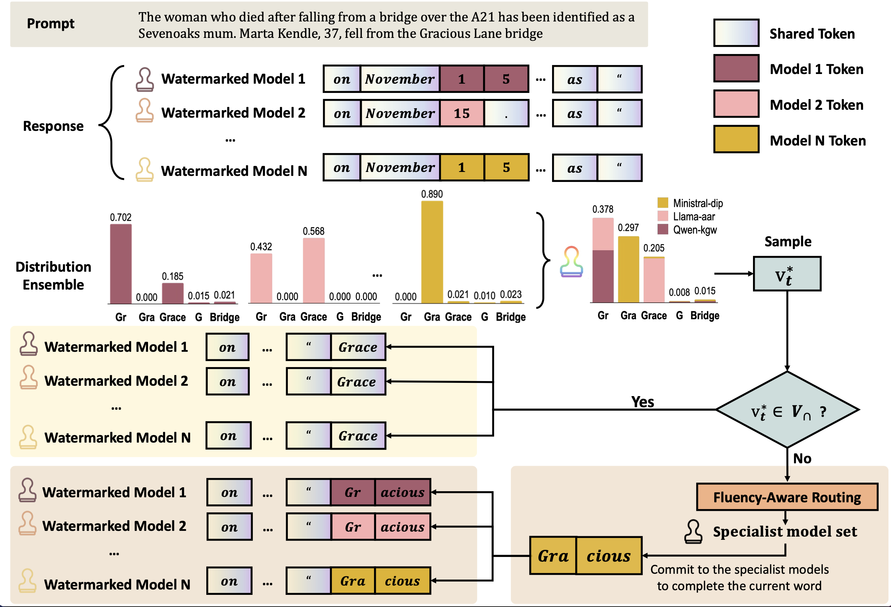
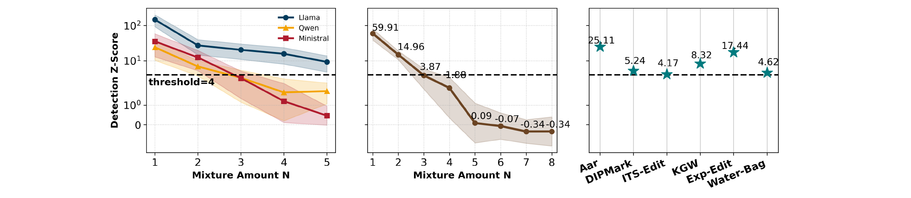
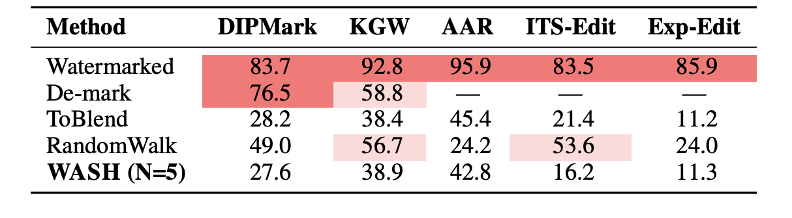
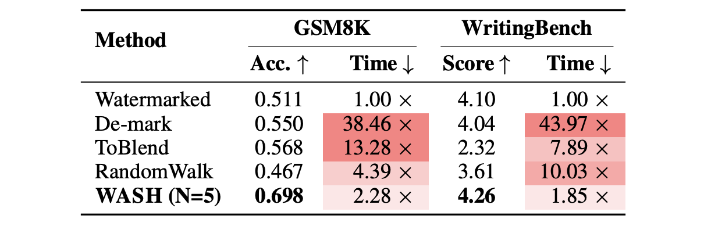

Abstract
Watermarking embeds statistical signatures in AI-generated text for detection and attribution. We reveal a fundamental vulnerability: when users access multiple models (today's reality), watermarks trivially fail. Watermarks perturb output distributions away from the original, and in competitive markets, these perturbations are typically independent across providers. We theoretically prove that averaging output probability distributions recovers the unwatermarked distribution with up to a second-order error term. Empirically, simply averaging across 3-5 models cancels out these perturbations. We introduce WASH (Watermark Attenuation via Statistical Hybridisation), which solves practical challenges in ensemble generation: vocabulary misalignment and tokenisation differences across heterogeneous models. Experiments across six watermarking schemes and three LLMs show that averaging across 3 models suppresses detection z-scores from 5-300 to below 2 (below the detection threshold of 4) and reduces TPR@5%FPR to below 50%, while improving quality by 27.5% and running 6× faster than the best baseline on long sequence generation. Our results suggest that robust AI-text detection via watermarking requires either accepting this fundamental vulnerability or unprecedented coordination among model providers.
How WASH Works

Results



BibTeX
@inproceedings{wu2026wash,
title = {Linear Ensembles Wash Away Watermarks: On the Fragility of Distributional Perturbations in LLMs},
author = {Wu, Zhihao and Gong, Gracia and Zhu, Qinglin and Chen, Yudong and Zhao, Runcong},
booktitle = {Proceedings of the 43rd International Conference on Machine Learning},
series = {Proceedings of Machine Learning Research},
publisher = {PMLR},
year = {2026},
url = {https://arxiv.org/abs/2605.30501}
}